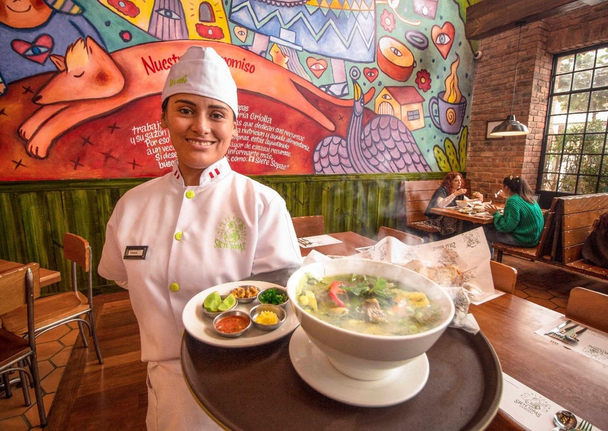

Nuestra Historia
Desde nuestros humildes comienzos, Siete Sopas ha sido un referente en la gastronomía peruana, ofreciendo platos tradicionales con un toque único. Fundado en 2016, nuestro objetivo siempre ha sido proporcionar a nuestros clientes una experiencia culinaria excepcional.

Nuestra Misión y Visión
Misión
Brindar una experiencia gastronómica auténtica y deliciosa, con un servicio cálido y amigable, siempre comprometidos con la calidad y la frescura de nuestros ingredientes.

Visión
Ser la cadena de restaurantes preferida de los peruanos, llevando el sabor y la tradición de nuestra cocina a cada rincón del país, y expandiéndonos a nivel internacional.

Valores

- Calidad: Compromiso con la frescura y excelencia de nuestros ingredientes.
- Tradición: Respetamos las recetas ancestrales de la gastronomía peruana.
- Calidez: Brindamos un servicio cercano y amable a todos nuestros comensales.
- Innovación: Siempre buscamos nuevas formas de sorprender a nuestros clientes.
Nuestra Propuesta Única
En Siete Sopas, cada plato es preparado con ingredientes frescos y de alta calidad, con un toque especial que solo nuestros chefs conocen. ¿Nuestra receta secreta? El amor y la dedicación con la que preparamos cada sopa, asegurando que cada bocado sea una experiencia inolvidable.